实例分析 01
SpeakMore 官网
用第 9 课的八步看法，完整看一遍 speakmore.zephyrxiang.com。每个判断都配上量出来的数字和依据：好在哪、差在哪、为什么。
00先说结论
这个页面在"有规律"这一层做得很到位：字号、颜色、间距都来自一张很短的清单，而且同一种角色永远用同一个值。9 个内容区块的骨架完全一样：上下留白 208px，标题 60px，左边缘都在同一条线上。对比度、深色模式、减弱动态效果、键盘焦点这些常被省掉的地方，它也都做了。
问题不在"好不好看"，主要在内容和页面长度：产品截图被缩得太小，里面的字读不出来；页面有 15 屏长，手机上又没有导航；有一处文案和内容数量对不上。另外还有几处小的排版细节。
为什么你会觉得"还行"，却说不出为什么：你感觉到的整齐和高级，主要来自三件能量出来的事。一是重复，每个区块长得一样，眼睛很快就学会了这页的规律（第 1 课："好看"的第一层答案是有规律）。二是颜色极少、对比很高，几乎只有黑、白、灰。三是字号落差大，区块标题是正文的 3.75 倍，主次一眼就分得开（第 5 课）。
下面按八步逐项看。最后有一张汇总表。
01目标：首屏回答了什么
先说一句话：点进官网的人，想知道"这是什么、对我有没有用、怎么装"。用这句话去对首屏：
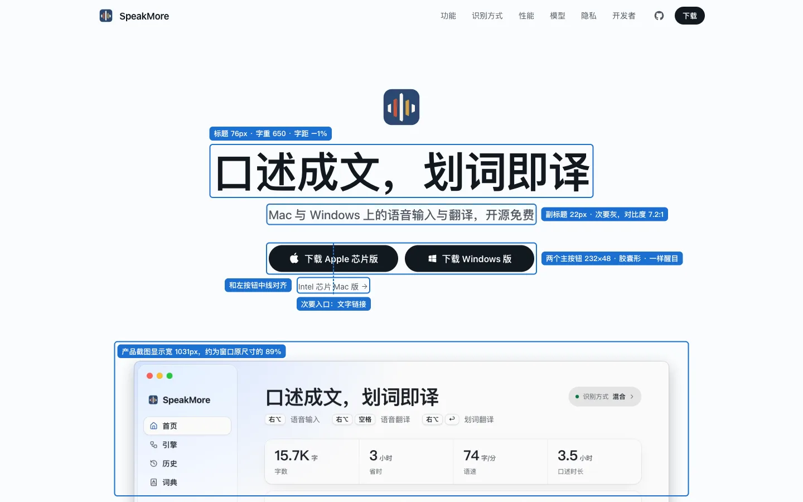
- 是什么：76px 的标题"口述成文，划词即译"，八个字说清两个功能。
- 在哪用、多少钱：副标题"Mac 与 Windows……开源免费"。
- 怎么装：两个下载按钮。
- 长什么样：下方的产品窗口截图，按原尺寸的 89% 显示，里面的字还看得清。
四个问题，首屏全部回答了。下载按钮还有一个好细节：按平台分开，替用户先做了"选哪个安装包"这个决定。Intel 版不常用，就降成一个文字链接，放在 Apple 按钮正下方，两者的中线都在 x = 598。这是第 4 课的接近性加第 5 课的先弱化再强调：靠得近，说明"这是 Mac 的另一个版本"；做成文字链接，说明"它是次要的"。
两个按钮一样醒目，算不算问题？第 5、6 课说过，一组按钮里只给一个醒目样式。但这里的两个按钮是同一个操作的两个版本，访客只会点自己平台那一个，不存在"该先点哪个"的困扰，所以属于合理的例外。想再进一步的话，常见做法是检测访客的系统，把对应平台的按钮放在前面，或者只把它做成实心。
02眯眼：最先跳出来的是什么
把首屏模糊掉，还能分辨出来的顺序是：大标题 → 两个黑色按钮 → 产品窗口。正好对应第 1 步的"是什么 → 怎么装 → 长什么样"。
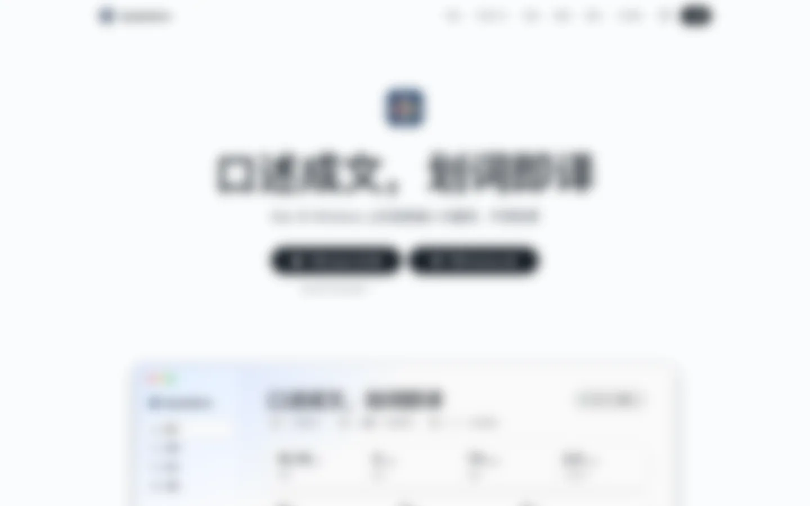
注意按钮是怎么"跳"出来的：全页没有用彩色的强调色，靠的是浅底上的一小块纯黑。黑色胶囊的面积不大，但它和背景的明暗差是全屏最大的，所以眼睛会落在那里。苹果官网也常用这种"只靠黑白"的做法。
03文字
字体：全部是系统字体
英文用 SF Pro，中文用苹方，都是系统自带，不用加载任何字体文件。细节在于：标题指定 SF Pro Display，正文指定 SF Pro Text。这是苹果的"光学尺寸"：同一套字体分大字号版和小字号版，大字号版字形更紧凑，小字号版字间更松、更好认。大数字用了圆体（SF Pro Rounded），代码用等宽字体，一共 4 种，全都是系统字体。
字号：按角色分，同一角色永远同一个值
全页一共量到 22 种字号，其中 8 种是"< 2 秒""¥2.63"这类大数字和它旁边的单位，按比例缩放；剩下 14 种是文字角色：
| 角色 | 字号 | 字重 | 说明 |
|---|---|---|---|
| 收尾标题"立即开始" | 80 | 650 | 全页最大的字，和首屏呼应 |
| 首屏标题 | 76 | 650 | 字距 −1% |
| 区块标题（9 个） | 60 | 650 | 9 个完全一样：行高 1.12，字距 −1% |
| 小节标题 | 48 / 32 | 650 / 600 | "国内源下载"48；"直出 / 混合 / 离线"32 |
| 三项功能标题 | 24 | 600 | |
| 引导语、演示文字 | 22 | 500 / 400 | 首屏副标题、口述演示 |
| 卖点小标题 | 18 | 600 | "16 种目标语言"等 |
| 说明文字 | 17 / 16 / 15 | 400 | 见下文 |
| 导航、标签、页脚 | 14 / 13 / 12 | 400 / 600 |
第 2 课说"一个界面 3～5 种字号"，这里多得多。但这是一个 15 屏长的营销页，不是一个 App 界面；按屏看，每屏大约 4～6 种。更重要的是两点，它都做到了：
- 同一角色永远同一个值：9 个区块标题的字号、字重、行高、字距一模一样。
- 落差拉得开：区块标题 60 ÷ 正文 16 = 3.75 倍，远超第 5 课说的 1.5 倍。
问题：说明文字挤着 17、16、15、14 四个字号，相邻只差 1px。三项功能下的说明是 17px，翻译段卖点下的说明是 16px，识别方式里的列表是 15px，它们都是"标题下面的一句说明"。1px 的差别人眼分不出来，放在一起都很难认，分散在不同屏里就完全看不出。所以这四个字号没有带来层级，只是让清单变长了。建议合成两档：说明 17，次要信息 14。
按 SpeakMore 的实测颜色和字号重排。即使并排放，17 和 16 也很难分清。
字重：4 档，其中 650 对中文不起作用
量到的字重有 400、500、600、650 四档（第 2 课建议 2～3 种）。650 这一档值得多说一句。我用页面的字体设置，在画布上分别以 600、650、700、800、900 画"成文规整"，五次画出来的像素完全相同；换成"App PDF"，每档都不一样。
原因是：苹方是"静态字体"，只有几档固定的粗细，最粗到 600（中粗体）。浏览器找不到 650，就退回最接近的 600。而英文用的 SF 是"可变字体"，粗细可以连续调，650 就真的是 650。结果是像"命令行与 App 对等"这样的中英混排标题，英文会比中文略粗一点。影响很小，但值得记住：给中文设字重，超过 600 就没有区别了。
换行：标题处理得很好，有三处小瑕疵
标题用了 word-break: keep-all 加 text-wrap: balance。前者让中文连续的字之间不能断，只能在标点和空格处断；后者让几行尽量一样长。效果是手机上标题都在逗号处换行，比如"口述成文，／划词即译"。中文网页里很少有人注意这一点。
但同一个规则在副标题上出了问题。中文之间不能断，剩下的断点只有英文单词之间的空格，于是手机上断成了"Mac 与 Windows ／ 上的语音输入与翻译"，"Windows 上"被拆开了。
改法（已在浏览器里试过）：把"Windows"和"上"之间的空格换成不换行空格，在"上的"后面放一个允许断行的位置：
Mac 与 Windows 上的<wbr>语音输入与翻译，开源免费
改完断成"Mac 与 Windows 上的 ／ 语音输入与翻译，开源免费"。
另外有三段说明，最后一行只剩一两个字：
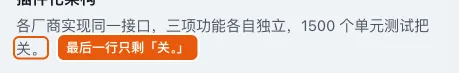
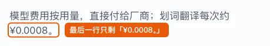
这三段用的是默认换行。给它们也加上标题用的 text-wrap: balance，两行就会拉平：实测三段的两行宽度分别从 366 / 32、413 / 30、374 / 82 变成 192 / 206、225 / 218、221 / 239。另一个选项 text-wrap: pretty 在 Chrome 里只把最后一行从 2 个字拉到 3 个字，不够。
04颜色
中性色：同一个色相，只改亮度
页面的颜色用 OKLCH 写。它用三个数描述一个颜色：亮度、彩度、色相，其中亮度是按人眼感受均匀分布的。这个页面所有的灰都取自同一个色相（255，偏冷的蓝灰），只改亮度。好处是主文字和次要文字的明暗差在人眼里很稳定，以后换色相也不用重新调。
#FBFCFD
#F0F3F6
#06070A
白底 17.2:1
白底 7.2:1 · 灰底 6.7:1
黑底 10.1:1
灰底 6.1:1
对比度全部达标，而且很高。普通文字的标准是 4.5:1（WCAG AA），这里最低的也有 6.1:1，次要灰达到了更严的 7:1（AAA）。很多模仿苹果风的页面会把次要灰调得很浅，比如白底上的 #999，只有 2.8:1，看着"高级"但看不清。这里没有犯这个错。
强调色：几乎没有
能点的地方只有两种样子：黑色胶囊按钮，和蓝色文字链接。这个蓝只在"在 GitHub 查看源码"和键盘焦点框上出现。完全符合第 3 课"强调色只给可点击的地方"。
语义色：全页颜色用得最好的地方
"三种识别方式"这一段，用一种朱砂红（代码里的颜色名就叫 cinnabar）表示数据离开了本机，只出现在三个地方：上传路径的线和云端节点，"上传音频 / 只上传文字"前面的圆点，以及"↑ 音频""↑ 文字"这两个小标签。完全不上传的"离线"一行，一点红都没有。
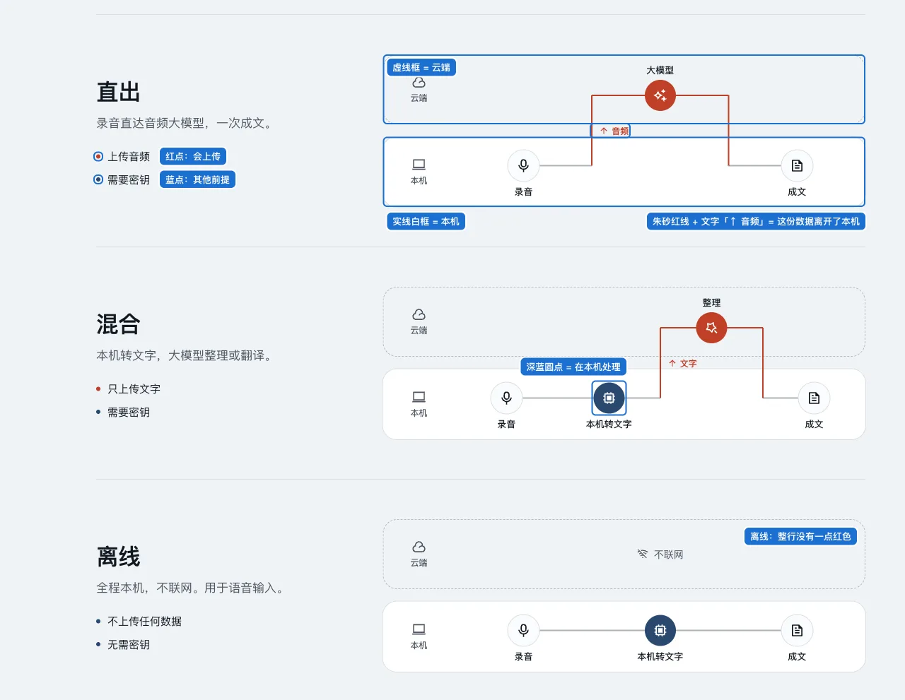
一个颜色只表达一种意思，全页都守住了，而且颜色之外还配了文字、虚实线框和图标。去掉颜色（比如红绿色弱的人来看），这张图依然能看懂。
两色标题：用得准的时候很好，用多了就变味
大标题前半句用次要灰，后半句用主文字色。这是苹果官网常见的写法，作用是把一句话分成"铺垫 → 重点"，让眼睛落在后半句。
前半句是用户的现状，后半句是产品给的结果。
"速度快"和"占用少"同样重要，灰掉前一个等于把一个卖点调弱了。
在一串两色标题里，这个单色标题反而显得更有分量。
11 个大标题里有 7 个用了两色，另外"国内源下载 ／ 快十余倍"这个小节标题也用了。重复这么多次，它就从"强调"变成了一种装饰性的节奏。用一个手法之前，先问它表达的是什么关系：铺垫和重点，适合两色；并列，就不适合。
深色模式：做完整了，而且没有简单反色
系统切到深色，背景、文字、按钮都跟着变：黑色按钮变成白色按钮，首屏的产品截图也换成了深色版的 App 截图。很多网站做深色模式会漏掉截图。
还有一个容易忽略的地方。浅色模式下，"性能"这一段用黑底，在一片浅色里制造一次节奏变化。到了深色模式，整页都是深色，没法再"反过来"，它的做法是让这一段比相邻的段再暗一档（亮度 0.19 → 0.13）。节奏弱了，但还在。这就是第 3 课说的"暗色模式不是反色"。
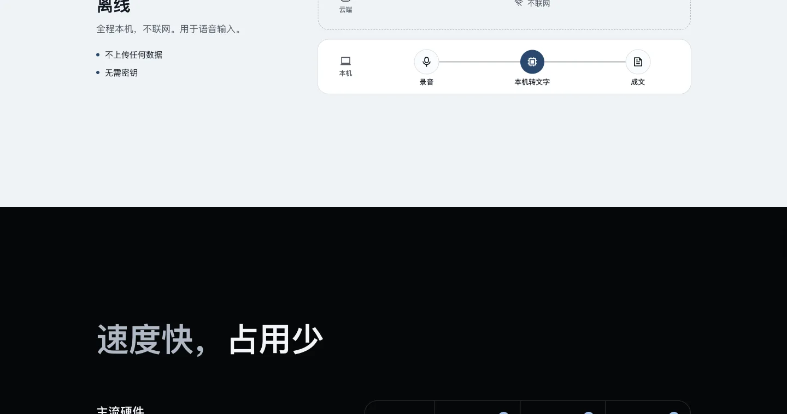
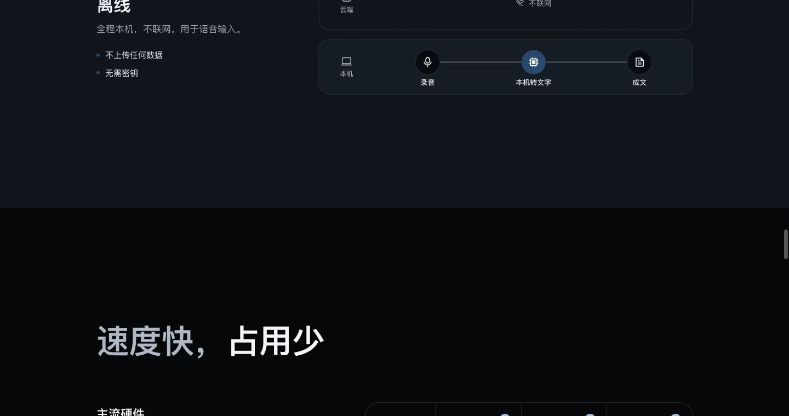
05间距与对齐
拿一个区块（"开口即译"）量一遍。其他 8 个区块的骨架和它一样：
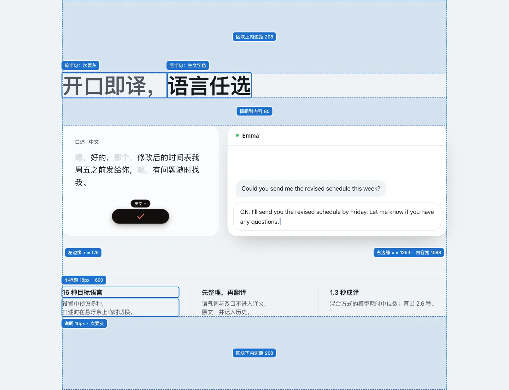
- 一条左边缘贯穿全页：9 个区块标题的左边缘全在 x = 176。首屏和"立即开始"两屏居中，中间全部左对齐，像一本书的封面、正文、封底。整页的对齐线就这两条：左边缘线和中线（第 4 课：对齐的位置越少越好）。
- 内容宽度固定：每个区块最宽 1152px，左右各留 32px，内容区 1088px。
- 分组一级比一级紧：区块之间 416px（上一段的下留白 208 + 下一段的上留白 208）> 标题到内容 80px > 小标题到说明约 6px。每一级都差好几倍，哪些东西是一组，一眼就能看出来（第 4 课：组内紧、组间松）。
代价是页面很长。桌面版整页 13808px，大约 15 屏；其中区块的上下留白加起来约 4200px，占了三成。留白换来了清楚的分组和"高级感"，代价是滚动距离：想看"隐私"那一段，要往下滚 9382px，差不多 10 屏。桌面上可以点顶部导航直接跳过去。手机上留白已经收紧了（每段上下各 112px），但整页仍有 13962px，约 16.5 屏，而手机版把 6 个导航锚点全去掉了，只剩"GitHub"和"下载"（见上面的手机截图），只能一路滚。
第 7 课引过 NN/g 的数据：顶层选项少的时候，别把导航藏起来。这里不是藏进菜单，而是直接没了。可以在手机上加一条横向滚动的锚点栏。
背景交替断了一次
区块之间除了留白，还靠底色交替来分界：白、浅灰、白、浅灰……但"隐私"和"首次引导"两段都是浅灰，中间 416px 同一个颜色，读起来像一段内容中间的空洞。
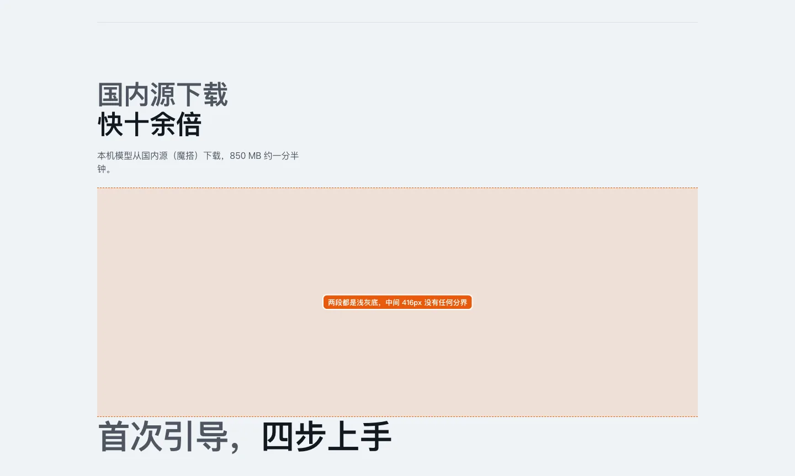
可点区域
首屏两个下载按钮 232 × 48，很充足。手机顶部的"下载"是 54 × 32，GitHub 图标 36 × 36。网页的标准是 WCAG 2.5.8 的 24 × 24，都达标；按 iOS 习惯的 44pt 算，偏小一点。
06组件与状态
所有按钮都是胶囊形（圆角等于高度的一半，第 6 课的三种形状之一），卡片统一用大圆角。状态做得很齐，这一点很多官网都省掉了：
- 悬停：主按钮透明度降到 85%。这条样式写在
@media (hover: hover)里，只在有鼠标的设备上生效，手机上点完不会"粘"在悬停状态。 - 按下：按钮缩小到 98%（第 6 课：自定义按钮必须有按下状态）。
- 键盘焦点：用 Tab 键依次走过导航和按钮，11 个元素都显示同样的 2px 蓝框，和元素之间隔 3px。
- 复制：点安装命令旁的"复制"，按钮变成"✓ 已复制"。
- 跑马灯：模型 logo 那一排会自动滚动，鼠标放上去就暂停。
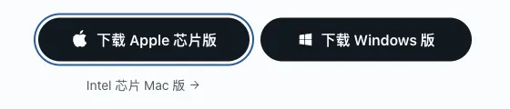
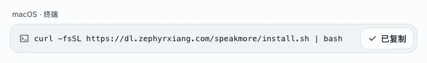
还有两处看不见的细节。一是每张截图都写了具体的替代文字，比如"SpeakMore 主窗口首页：三项功能的快捷键、字数、省时、语速与每日热力图，右上角为当前识别方式"，读屏的人也能知道图里有什么。二是"0.23 秒"这类滚动数字的动画里有一列列 0～9 的数字，这些数字对读屏软件隐藏了，读屏只会读出真实的数值。
07结构与内容
内容顺序是：是什么 → 三项功能 → 三段演示 → 识别方式 → 性能 → 模型与价格 → 隐私 → 首次引导 → 更多特性 → 开发者 → 下载。先讲"能做什么"，再讲"凭什么信你"（速度、隐私、价格），最后讲"怎么开始"，这个顺序是合理的。三项功能的卡片本身就是链接，点哪个就跳到对应的演示。导航栏停在页面顶部时是透明的，往下滚之后变成半透明的毛玻璃底，和 iOS 导航栏的滚动边缘效果一个思路（第 7 课）。
问题一：截图缩得太小，字读不出来
截图里的字有多大，等于"App 里的字号 × 截图的显示比例"。按截图是 2 倍图换算，几张截图的显示比例是：
| 截图 | 显示比例 | App 里 13pt 的字在页面上 |
|---|---|---|
| 首屏主窗口 | 89% | 约 11.6px，看得清 |
| 网页划词 | 87% | 约 11.3px，看得清 |
| 引擎页 | 60% | 约 7.8px |
| PDF 划词 | 59% | 约 7.7px |
| 首次引导（5 张） | 50% | 约 6.5px |
| 终端划词 | 46% | 约 6px |
| 手机上（含首屏主窗口） | 28%～36% | 约 4px |
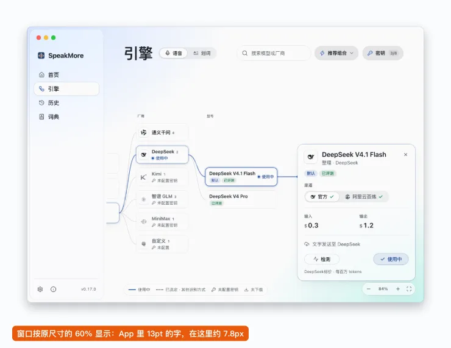
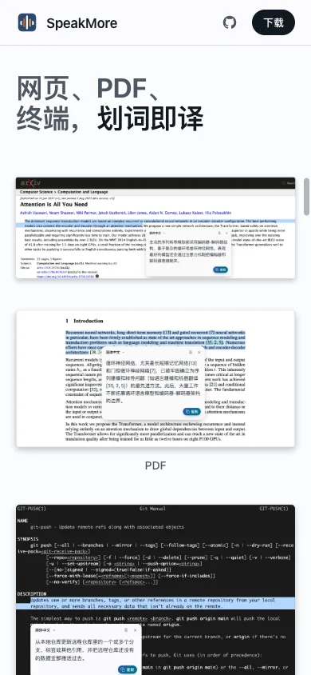
第 2 课说 iOS 最小字号是 11pt。字小到 6～8px，截图就只剩"质感"，说明不了功能。"首次引导"这一段的全部内容就是 5 张截图，读不出来，这一段等于没有信息。改法：只截局部，比如引擎页只截右侧的详情卡，按 80% 以上的比例显示。介绍软件功能时，放大局部比缩小全窗口更常见，也更有用。
问题二：标题说"四步"，卡片编号到 05
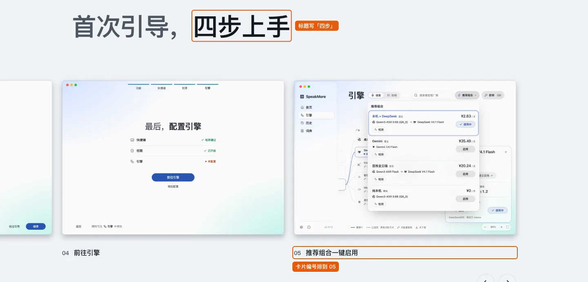
仔细看截图能明白：App 的引导确实是 4 步，窗口顶部的进度条是 4 段（功能、快捷键、权限、引擎），第 05 张展示的是引导结束后的引擎页。但读者先看到的是编号，会数出 5 个，然后怀疑是不是自己理解错了。这属于尼尔森原则里的"一致性"问题。改法：第 05 张去掉编号，写成"引导之后：推荐组合一键启用"。
可以讨论：手机访客的目标
在手机上点"下载 Apple 芯片版"，会下载一个手机装不了的 .dmg 安装包。从手机点进来的人，多半是在聊天群或社交网站看到了链接，这一刻能做的只是"了解一下、记住它"。手机版的主按钮可以考虑换成"发送到电脑"或"复制链接"。这是目标层面的判断，不违反哪条规范，所以只列为可以讨论。
08动态
用动画讲故事，是这一页最有说服力的部分。"口述随意，成文规整"这一段，左边逐字打出一段带口头禅的原话，然后"嗯""那个""呃"这些词变淡，右边出现整理好的句子。一张静态截图说不清"整理"是什么意思，这段动画几秒就说清了。
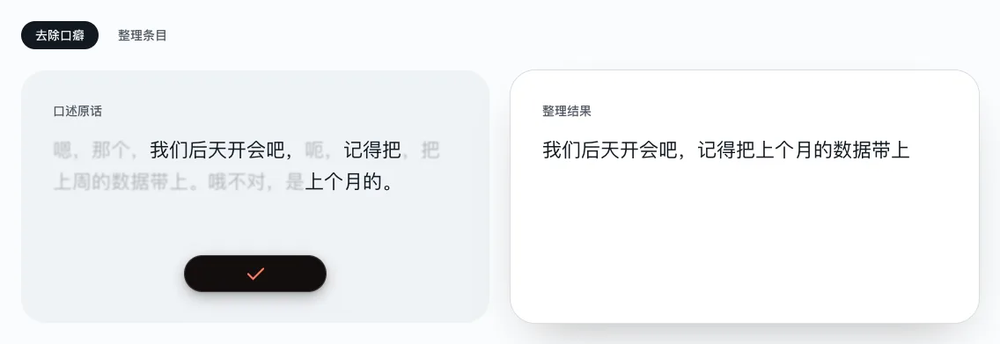
- 入场动画：区块滚到眼前时淡入、轻微上移。
- 减弱动态效果：在系统里打开后实测，所有内容不用滚动就已经显示，演示直接显示最后一帧，logo 跑马灯变成静止的网格。完整支持（第 8 课）。
- 一个小代价：正常动效下，演示要几秒才出结果，滚得快的人看到的是一张空白的"整理结果"卡片。
09汇总
做得好的
- 一张很短的清单，并且严格复用：9 个区块的字号、留白、左边缘完全一致。
- 对比度全部 ≥ 6.1:1，次要灰达到 7:1。
- 颜色只表达意义：强调色只给可点击的地方；朱砂红只表示"上传"，还配了文字。
- 层级落差大（标题是正文的 3.75 倍），分组一级比一级紧。
- 按钮的悬停、按下、焦点、复制反馈都有。
- 深色模式、减弱动态效果、替代文字都做完整了。
- 用动画讲清了"整理"是什么意思。
- 中文标题只在标点处换行。
值得改的
"严重程度"用第 9 课的 NN/g 0～4 级，评级是我的判断。
| 现象 | 依据 | 严重程度 | 改法 |
|---|---|---|---|
| 4 组产品截图按 46%～60% 显示，里面的字只有 6～8px，手机上约 4px | 字要读得出来（第 2 课最小 11pt）；内容要服务目标 | 2 | 只截局部，按 80% 以上显示 |
| 手机版去掉了全部导航锚点，整页 16.5 屏只能滚 | NN/g：顶层选项少时别藏导航（第 7 课） | 2 | 手机加横向滚动的锚点栏 |
| "四步上手"，卡片编号到 05 | 尼尔森原则：一致性 | 1 | 第 05 张去编号，写成"引导之后" |
| 说明文字用了 17 / 16 / 15 / 14 四个字号，相邻差 1px | 字号差距要拉开（第 2、5 课） | 1 | 合成两档：17 和 14 |
| 两色标题用在并列句上（"速度快，占用少"） | 先弱化再强调，弱化的应该是次要的（第 5 课） | 1 | 只在"铺垫 → 重点"的句子上用 |
| 3 处段末只剩一两个字；手机副标题断在"Windows ／ 上的" | 中文排版（第 2 课） | 1 | text-wrap: balance；不换行空格 + <wbr> |
| "隐私"和"首次引导"两段同底色，中间 416px 没有分界 | 分组要有明确边界（第 4 课） | 1 | 换白底或加分割线 |
| 字重 650 对中文无效，中英混排时英文略粗 | 字重 2～3 种（第 2 课） | 1 | 标题统一用 600 |
| 手机上点"下载"会得到装不了的安装包 | 目标：手机访客此刻想做什么（第 5 课） | 讨论 | 手机上换成"发送到电脑"或"复制链接" |
"苹果风"到底学到了什么：这一页用到的苹果式做法有系统字体加光学尺寸、大字号收紧字距、两色标题、黑色胶囊按钮、大面积留白、浅灰与黑色区块交替、滚动后才出现的毛玻璃导航、带阴影的窗口截图。它们的共同点是克制：颜色极少，主次全靠字号和留白区分。
前两个问题其实是同一件事的两面。苹果产品页的大留白，是留给铺满屏幕的大图的。这一页学到了留白，截图却被缩小了。结果是页面变长了，图里的内容反而看不清。（这是我的判断，供参考。）
这个例子的要点
- "整齐、高级"的感觉主要来自重复：同一角色永远同一个值，比清单本身短不短更重要。
- 字号种类可以多，但相邻两档要拉得开；差 1px 的两档等于一档。
- 次要灰不用调得很浅也能显得"高级"，7:1 一样好看。
- 一个颜色只表达一种意思，再配上文字或形状，去掉颜色也要看得懂。
- 两色标题这类手法，先问它表达什么关系，再决定用不用。
- 截图里的字号 = 原字号 × 显示比例。读不出来的截图只是装饰。
- 静态截图看不到的部分：深色模式、减弱动态效果、键盘焦点、手机宽度，都要实际切过去看。
怎么得到这些数字
用无头浏览器打开页面，用脚本读出每个元素的字号、颜色、位置，再按 WCAG 公式算对比度。截图上的标注框也是按读出来的位置画的。